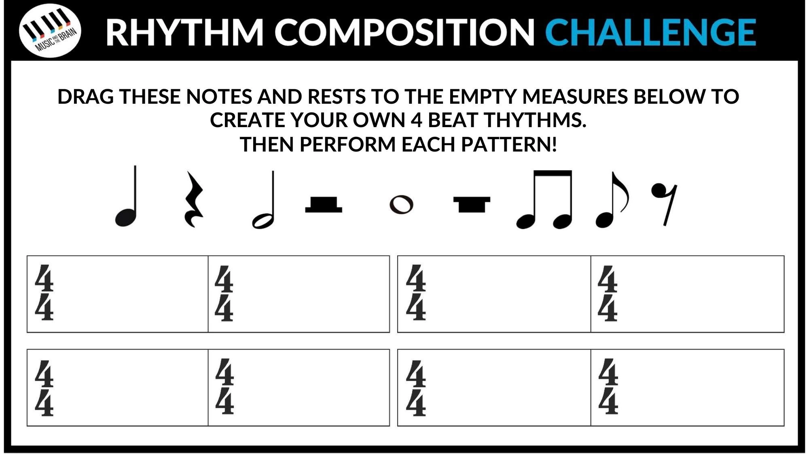

Rhythm Composition Challenge — Music and the Brain

Drag these notes and rests to the empty measures below to
create your own 4 beat rhythms.
Then perform each pattern!
Compose. Then perform.Drag a symbol, or select one and click a measure.